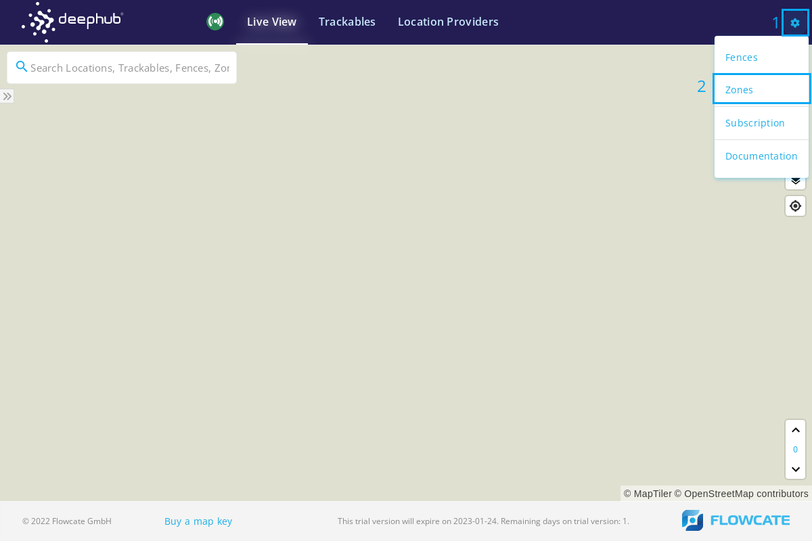
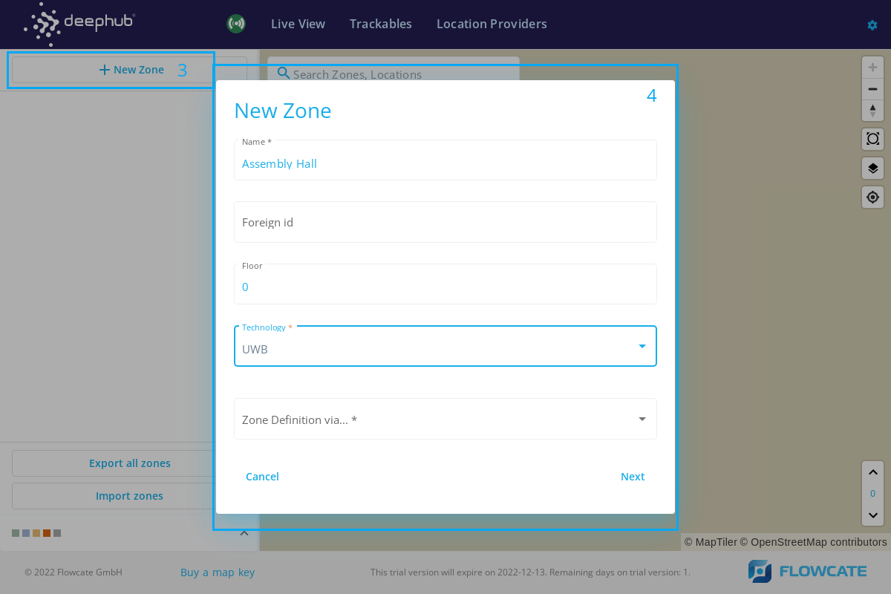
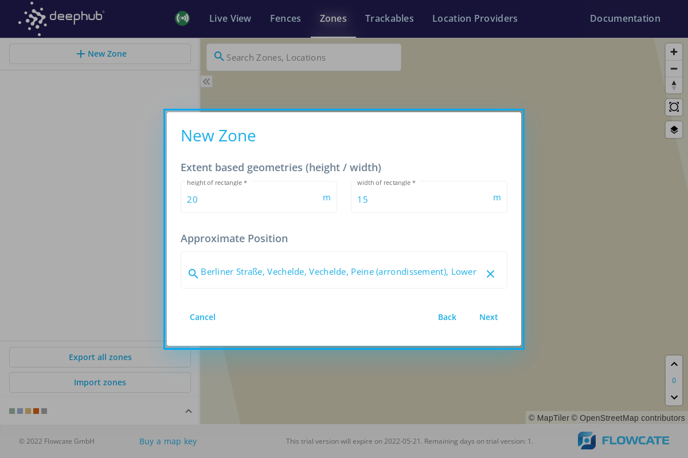
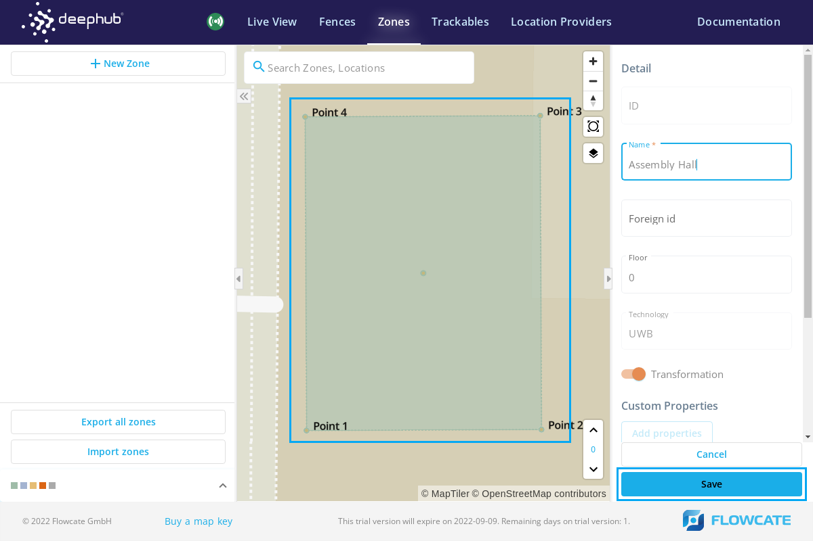
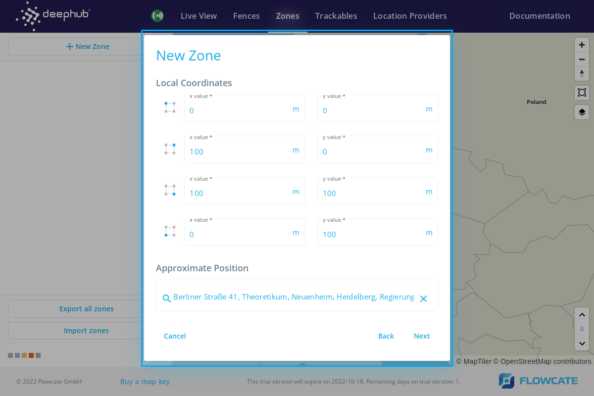
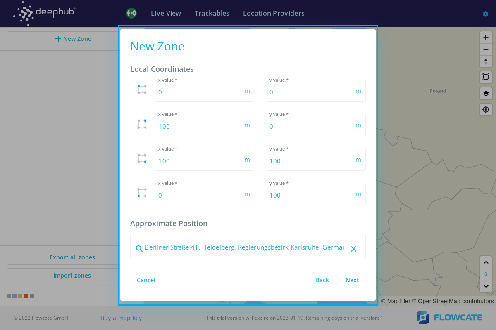
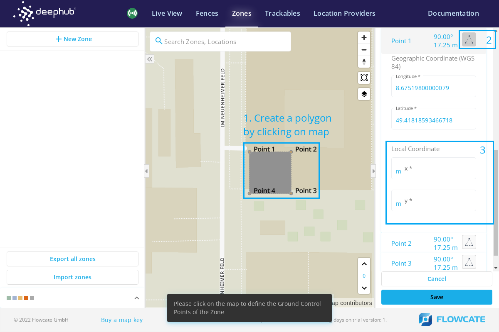
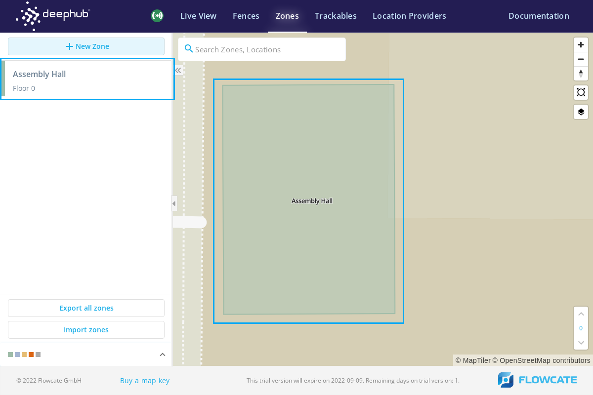

Zones
Once a user is logged into the DeepHub®, the following user interface would appear with “Zone Setup”. Input the address of the desired site in the search bar. For example, “Emmendinger Straße 21, Teningen”.
To create a new localization zone, click on “New Zone” and a new pop-up window will be launched to specify characteristics of the zone.
Fill in the name of the zone and the floor level on which the zone is supposed to be created.
Select the desired technology from the dropdown menu.
Select a method of creating a zone from the dropdown list and click on “Next”. There are 4 methods to create a zone.
Extent based geometries (width/height)
Enter the height and width of the zone rectangle in meters. It is also possible to enter the approximate address where the zone is supposed to be created. Click on “Next” and the zone will appear on the user interface or at the approximate location which was pre-specified.
Adjust the zone orientation by moving and rotating the zone on the interface and click on “Save” to locate the zone on the user interface.
Local Position Input (Four-sided Polygon)
Enter the coordinates for each corner of a rectangular zone in meters. It is also possible to enter the approximate address where the zone is supposed to be created. Click on “Next” and the zone will appear on the user interface or at the approximate location which was pre-specified.
Adjust the zone orientation by moving and rotating the zone on the interface and click on “Save” to locate the zone on the user interface.
GPS Position Input (Four-sided Polygon)
Enter the geographic coordinates for each corner of a rectangular zone in the form of longitude and latitude. Click on “Next” and the zone with prescribed dimensions will appear on the user interface.
Adjust the zone orientation by moving and rotating the zone on the interface and click on “Save” to locate the zone on the user interface.
Drawing on map
Left click on the map to draw a polygonal zone in any shape. For example: Click 4 points to draw a rectangular zone. On the right side of the user interface, the local position for each point of the newly introduced zone can be modified. Click on the “Save” button to integrate the new zone into the map.
The newly created zone will appear on the map. On the left side pane, the list of created zones will appear.
